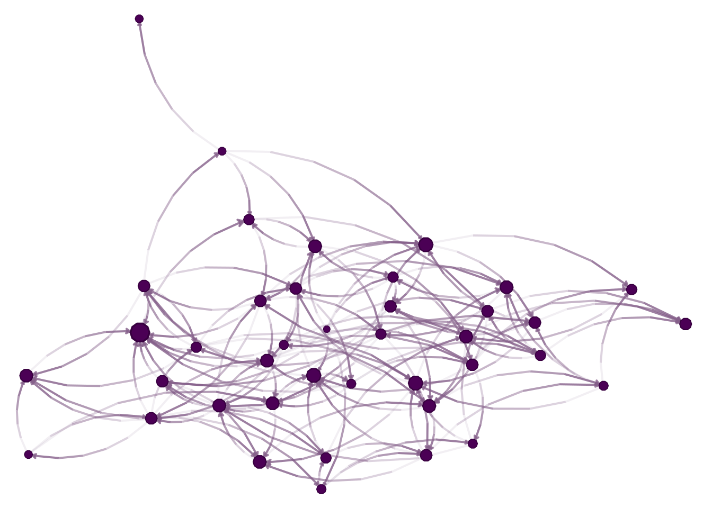
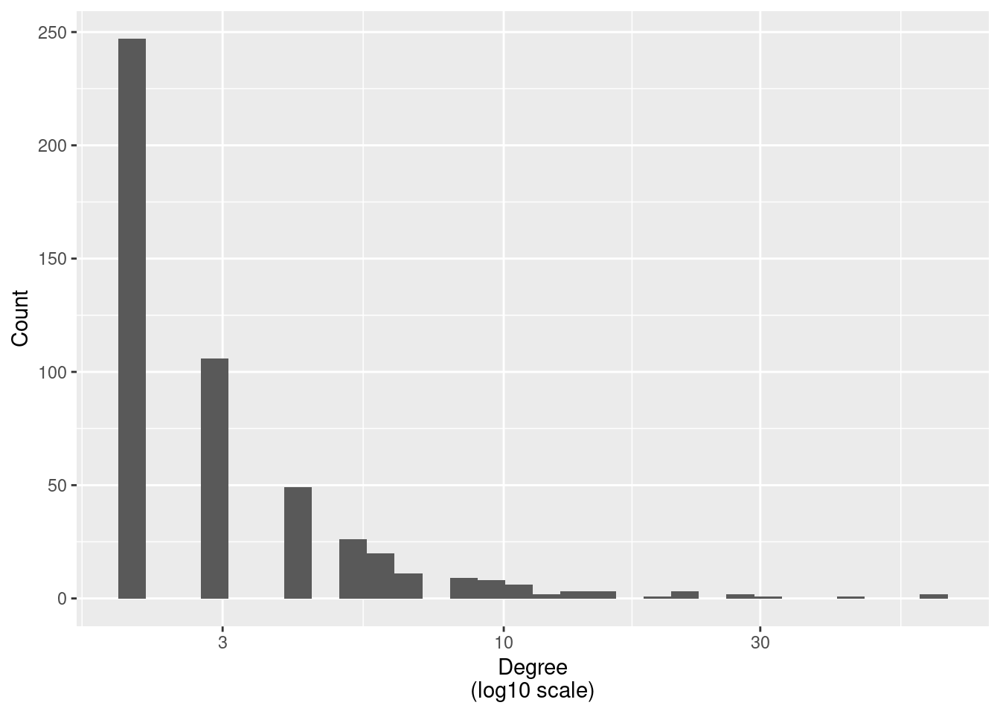

In this section, we will focus on reviewing the most common random graph models, how these are used, and what things are important to consider when using them. Later on in the course, we will focus on Exponential-Family Random Graph Models [ERGMs], which are a generalization of the models we will discuss here.
3.2 Erdős–Rényi model
The Erdős–Rényi model is the simplest random graph model. It is defined by two parameters: n and p. The parameter n is the number of nodes in the graph, and p is the probability that any two nodes are connected by an edge. The model is named after Paul Erdős and Alfréd Rényi, who first introduced it in 1959.
Formally, we can describe the ER model as follows: (V, E) where V = \{1, \ldots, n\} and E is a set of edges, where each edge is included with probability p.
Tip
Computing note: In the case of large networks, sampling ER graphs can be done effectively in a two-step process. First, we sample the number of edges in the graph from a binomial distribution. Then, we sample the edges uniformly at random from the set of all possible edges. This is much more efficient than sampling each edge independently since the number of possible edges is much smaller than the number of possible graphs.
Most of the time, the ER is used as a reference distribution for studying real-world networks. Nevertheless, using the ER model as a null model for a real-world network is not always a good idea, as it may inflate the type two error rate.
3.2.1 Code example
## Model parametersn <-40p <-0.1## Generating the graph, version 1set.seed(3312)g <-matrix(as.integer(runif(n * n) < p), nrow = n, ncol = n)diag(g) <-0## Visualizing the networklibrary(igraph)library(netplot)nplot(graph_from_adjacency_matrix(g))

3.3 Watts-Strogatz model
The second model in our list is the small-world model, introduced by Duncan Watts and Steven Strogatz in 1998. The model is defined by three parameters: n, k, and p. The parameter n is the number of nodes in the graph, k is the number of neighbors each node is connected to, and p is the probability that an edge is rewired. As its name suggests, the networks sampled from this model hold the small-world property, which means that the average distance between any two nodes is small.
Networks from the WS model are generated as follows:
Start with a ring of n nodes, where each node is connected to its k nearest neighbors.
For each edge (u, v), rewire it with probability p by replacing it with a random edge (u, w), where w is chosen uniformly at random from the set of all nodes.
Challenge: How would you generate a WS graph using the two-step process described above?
3.3.1 Code example
## Creating a ringn <-10V <-1:nk <-3p <- .2E <-NULLfor (i in1:k) { E <-rbind(E, cbind(V, c(V[-c(1:i)], V[1:i])))}## Generating the ring layoutlo <-layout_in_circle(graph_from_edgelist(E))## Plotting with netplotnplot(graph_from_edgelist(E),layout = lo )
Scale-free networks are networks where the degree distribution follows a power-law distribution. The power-law distribution is a heavy-tailed distribution, which means that it has a long tail of high-degree nodes. The power-law distribution is defined as follows:
p(k) = C k^{-\gamma}
where C is a normalization constant and \gamma is the power-law exponent. The power-law exponent is usually between 2 and 3, but it can be any value larger than 2. The power-law distribution is a special case of the more general class of distributions called the Pareto distribution.
Scale-free networks are generated using the Barabási–Albert model, which was introduced by Albert-László Barabási and Réka Albert in 1999. The model is defined by two parameters: n and m. The parameter n is the number of nodes in the graph, and m is the number of edges added at each time step. The model is generated as follows:
Start with a graph of m nodes, where each node is connected to all other nodes.
At each time step, add a new node to the graph and connect it to m existing nodes. The probability that a new node is connected to an existing node i is proportional to the degree of i.
3.4.1 Code example
## Model parametersn <-500m <-2## Generating the graphset.seed(3312)g <-matrix(0, nrow = n, ncol = n)g[1:m, 1:m] <-1diag(g) <-0## Adding nodesfor (i in (m +1):n) {# Selecting the nodes to connect to ids <-sample(x =1:(i-1), # Up to i-1size = m, # m nodesreplace =FALSE, # No replacement# Probability proportional to the degreeprob =colSums(g[, 1:(i-1), drop =FALSE]) )# Adding the edges g[i, ids] <-1 g[ids, i] <-1}## Visualizing the degree distributionlibrary(ggplot2)data.frame(degree =colSums(g)) |>ggplot(aes(degree)) +geom_histogram() +scale_x_log10() +labs(x ="Degree\n(log10 scale)",y ="Count" )

4 Motif discovery
One important application of random graphs is motif discovery. The principle is simple: we can use random graphs to generate null distributions of observed statistics/motifs. Usually the process is as follows:
Compute the desired set of motifs to assess, for instance, number of triangles, 4 cycles, etc.
Using one of the random graph models, generate a null distribution of networks similar to the observed graph. This is important, as the null must be relevant to the case. At minimum, must have the same density of the observed graph.
For each random graph in the null, compute the same vector of statistics/motifs, and use that as a benchmark to assess the relative prevalence of the network.
Rewiring algorithms
One of the most common ways of generating random graphs is using degree sequence preserving algorithm. Implementations of this can be found in netdiffuseR and igraph.
4.1 Code example
# Loading the R packagelibrary(netdiffuseR)# A graph with known structure (see Milo 2004)n <-5x <-matrix(0, ncol=n, nrow=n)x <-as(x, "dgCMatrix")x[1,c(-1,-n)] <-1x[c(-1,-n),n] <-1x
# Simulations (increase the number for more precision)set.seed(8612)nsim <-1e4w <-sapply(seq_len(nsim), function(y) {# Creating the new graph g <-rewire_graph(x,p=nlinks(x)*100, algorithm ="swap")# Categorizing (tag of the generated structure)paste0(as.vector(g), collapse="")})# Countingcoded <-as.integer(as.factor(w))plot(table(coded)/nsim*100, type="p", ylab="Frequency %", xlab="Class of graph", pch=3,main="Distribution of classes generated by rewiring")# Marking the original structurebaseline <-paste0(as.vector(x), collapse="")points(x=7,y=table(as.factor(w))[baseline]/nsim*100, pch=3, col="red")